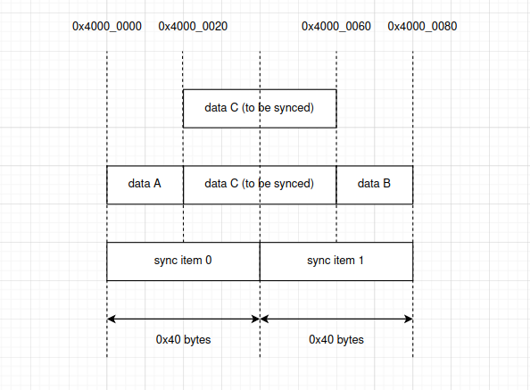

Memory Synchronization
Introduction
ESP32-P4 can access its connected PSRAM via these ways:
CPU
DMA
ESP32-P4 can access its internal memory via these ways:
CPU
DMA
By default, CPU accesses the above mentioned memory via cache. Whereas DMA accesses the memory directly, without going through cache.
This leads to potential cache data coherence issue:
When a DMA transaction changes the content of a piece of memory, and the content has been cached already. Under this condition:
CPU may read stale data.
The stale data in the cache may be written back to the memory. The new data updated by the previous DMA transaction will be overwritten.
CPU changes the content of an address. The content is in the cache, but not in the memory yet (cache will write back the content to the memory according to its own strategy). Under this condition:
The next DMA transactions to read this content from the memory will get stale data.
There are three common methods to address such cache data coherence issue:
Hardware based cache Coherent Interconnect, ESP32-P4 does not have such ability.
Use the DMA buffer from non-cacheable memory. Non-cacheable memory refers to the type of memory that is accessed by CPU without going through cache.
Explicitly call a memory synchronization API to writeback the content in the cache back to the memory, or invalidate the content in the cache.
Memory Synchronization Driver
The suggested way to deal with such cache data coherence issue is by using the memory synchronization API esp_cache_msync() provided by ESP-IDF esp_mm component.
Driver Concept
Direction of the cache memory synchronization:
ESP_CACHE_MSYNC_FLAG_DIR_C2M, for synchronization from cache to memory.ESP_CACHE_MSYNC_FLAG_DIR_M2C, for synchronization from memory to cache.
Type of the cache memory synchronization:
ESP_CACHE_MSYNC_FLAG_TYPE_DATA, for synchronization to a data address region.ESP_CACHE_MSYNC_FLAG_TYPE_INST, for synchronization to an instruction address region.
Driver Behaviour
Calling esp_cache_msync() will do a synchronization between cache and memory. The first parameter addr and the second parameter size together describe the memory region that is to be synchronized. About the third parameter flags:
ESP_CACHE_MSYNC_FLAG_DIR_C2M. With this flag, content in the specified address region is written back to the memory. This direction is usually used after the content of an address is updated by the CPU, e.g., a memset to the address. Operation in this direction should happen before a DMA operation to the same address.ESP_CACHE_MSYNC_FLAG_DIR_M2C. With this flag, content in the specified address region is invalidated from the cache. This direction is usually used after the content of an address is updated by the DMA. Operation in this direction should happen before a CPU read operation to the same address.
The above two flags help select the synchronization direction. Specially, if neither of these two flags are used, esp_cache_msync() will by default select the ESP_CACHE_MSYNC_FLAG_DIR_C2M direction. Users are not allowed to set both of the two flags at the same time.
The above two flags help select the type of the synchronization address. Specially, if neither of these two flags are used, esp_cache_msync() will by default select the ESP_CACHE_MSYNC_FLAG_TYPE_DATA type. Users are not allowed to set both of the two flags at the same time.
ESP_CACHE_MSYNC_FLAG_INVALIDATE. This flag is used to trigger a cache invalidation to the specified address region, after the region is written back to the memory. This flag is mainly used forESP_CACHE_MSYNC_FLAG_DIR_C2Mdirection. ForESP_CACHE_MSYNC_FLAG_DIR_M2Cdirection, behaviour is the same as if theESP_CACHE_MSYNC_FLAG_INVALIDATEflag is not set.ESP_CACHE_MSYNC_FLAG_UNALIGNED. This flag force theesp_cache_msync()API to do synchronization without checking the address and size alignment. For more details, see section Address Alignment Requirement following.
Address Alignment Requirement
There is address and size alignment requirement (in bytes) for using esp_cache_msync(). The alignment requirement comes from cache.
An address region whose start address and size both meet the cache memory synchronization alignment requirement is defined as an aligned address region.
An address region whose start address or size does not meet the cache memory synchronization alignment requirement is defined as an unaligned address region.
By default, if you specify an unaligned address region, esp_cache_msync() will return an ESP_ERR_INVALID_ARG error, together with the required alignment.
Warning for Address Alignment Requirement
You can set the ESP_CACHE_MSYNC_FLAG_UNALIGNED flag to bypass such check. Note you should be very careful about using this flag. Cache memory synchronization to an unaligned address region may silently corrupt the memory.
For example, assume:
alignment requirement is 0x40 bytes.
a call to
esp_cache_msync(), with ESP_CACHE_MSYNC_FLAG_DIR_M2C | ESP_CACHE_MSYNC_FLAG_UNALIGNED flags, the specified address region is 0x4000_0020 ~ 0x4000_0060 (see data C in below graph).
Above settings will trigger a cache invalidation to the address region 0x4000_0000 ~ 0x4000_0080, see sync item0 and sync item1 in the below graph.
If the content in 0x4000_0000 ~ 0x4000_0020 (data A in the below graph) or 0x4000_0060 ~ 0x4000_0080 (data B in the below graph) are not written back to the memory yet, then these data A and data B will be discarded.


API Reference
API Reference - ESP Msync Driver
Header File
This header file can be included with:
#include "esp_cache.h"
This header file is a part of the API provided by the
esp_mmcomponent. To declare that your component depends onesp_mm, add the following to your CMakeLists.txt:REQUIRES esp_mm
or
PRIV_REQUIRES esp_mm
Functions
-
esp_err_t esp_cache_msync(void *addr, size_t size, int flags)
Memory sync between Cache and storage memory.
For cache-to-memory (C2M) direction:
For cache writeback supported chips (you can refer to SOC_CACHE_WRITEBACK_SUPPORTED in soc_caps.h)
This API will do a writeback to synchronise between cache and storage memory
With ESP_CACHE_MSYNC_FLAG_INVALIDATE, this API will also invalidate the values that just written
Note: although ESP32 is with PSRAM, but cache writeback isn't supported, so this API will do nothing on ESP32
For other chips, this API will do nothing. The out-of-sync should be already dealt by the SDK
For memory-to-cache (M2C) direction:
This API will by default do an invalidation
This API is cache-safe and thread-safe
Note
If you don't set direction (ESP_CACHE_MSYNC_FLAG_DIR_x flags), this API is by default C2M direction
Note
If you don't set type (ESP_CACHE_MSYNC_FLAG_TYPE_x flags), this API is by default doing msync for data
Note
You should not call this during any Flash operations (e.g. esp_flash APIs, nvs and some other APIs that are based on esp_flash APIs)
Note
If XIP_From_PSRAM is enabled (by enabling both CONFIG_SPIRAM_FETCH_INSTRUCTIONS and CONFIG_SPIRAM_RODATA), you can call this API during Flash operations
- Parameters:
addr -- [in] Starting address to do the msync
size -- [in] Size to do the msync
flags -- [in] Flags, see
ESP_CACHE_MSYNC_FLAG_x
- Returns:
ESP_OK:
Successful msync
For C2M direction, if this chip doesn't support cache writeback, if the input addr is a cache supported one, this API will return ESP_OK
ESP_ERR_INVALID_ARG: Invalid argument, not cache supported addr, see printed logs
ESP_ERR_NOT_SUPPORTED: Vaddr is not in cacheable range, API will do nothing
-
size_t esp_cache_get_line_size_by_addr(const void *addr)
Get the cache line size by address.
- Parameters:
addr -- [in] The buffer address to examine
- Returns:
The cache line size in bytes. Return 0 if the memory (that the address points to) is not cacheable.
Macros
-
ESP_CACHE_MSYNC_FLAG_INVALIDATE
Do an invalidation.
Cache msync flags
For cache-to-memory (C2M) direction: setting this flag will start an invalidation after the cache writeback operation
For memory-to-cache (M2C) direction: setting / unsetting this flag will behave similarly, trigger an invalidation
-
ESP_CACHE_MSYNC_FLAG_UNALIGNED
Allow msync to a address block that are not aligned to the data cache line size.
-
ESP_CACHE_MSYNC_FLAG_DIR_C2M
Cache msync direction: from Cache to memory.
Note
If you don't set direction (ESP_CACHE_MSYNC_FLAG_DIR_x flags), it is by default cache-to-memory (C2M) direction
-
ESP_CACHE_MSYNC_FLAG_DIR_M2C
Cache msync direction: from memory to Cache.
-
ESP_CACHE_MSYNC_FLAG_TYPE_DATA
Cache msync type: data.
Note
If you don't set type (ESP_CACHE_MSYNC_FLAG_TYPE_x flags), it is by default data type
-
ESP_CACHE_MSYNC_FLAG_TYPE_INST
Cache msync type: instruction.